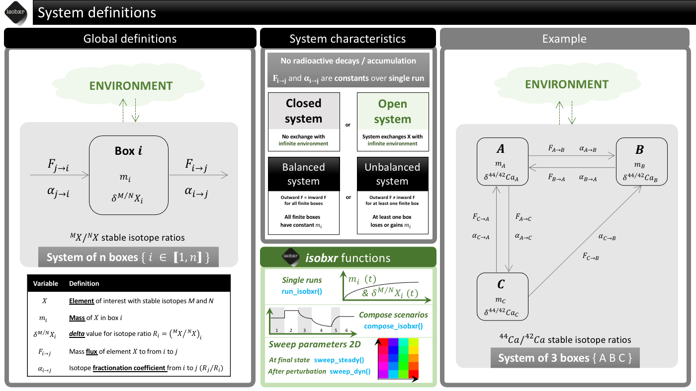

2 - General presentation
Théo Tacail
2021-08-26
Source:vignettes/vgn_02_General_presentation.Rmd
vgn_02_General_presentation.RmdFull documentation and tutorials can be found on the isobxr website.
The isobxr package is a set of R tools designed to perform and explore stable isotope box modelling of open or closed systems. It provides a ready-to-use tool allowing users to develop and test isotopic box models of their system of interest. It allows the user to explore the behavior of these systems in both static (e.g., at steady state) or dynamic modes (e.g., in reaction to a perturbation), build complex scenarios, and sweep the space of parameters in both static and dynamic modes.
Introduction to isobxr approach
Systems and modelling approach
The global definition of the systems considered for the stable isotope box modelling by isobxr is presented in the cheatsheet below.

Fundamental workflow
run_isobxris the main function of the isobxr package.run_isobxris used to perform single runs of stable isotope box models of all types of systems.The general workflow of the
run_isobxrfunction is summarized in the cheatsheet below.

Box modelling equations
In this section we present the mathematical formalism used in isobxr stable isotope box modelling.
The theory and formalism shown in this section is derived from the chapter 7 (Dynamic systems) of
: Albarède, F., 1995. Introduction to Geochemical Modelling. Cambridge University Press, Cambridge.
https://doi.org/10.1017/CBO9780511622960
Definitions
We consider a system consisting of \(n\) boxes \(j\), exchanging an element X that has at least two stable isotopes \(M\) and \(N\). Any box \(i\) is defined by:
- \(m^X_i\) the mass of element X in box \(i\) - also referred to as box size thereafter
- \(m^M_i\) and \(m^N_i\) the masses of isotopes \(M\) and \(N\) in box \(i\), respectively
- \(J_{i \mapsto j}^X\) is the mass flux of X from \(i\) to \(j\) (homogeneous to a mass per time unit)
We call \(R_i\) the \(M/N\) isotope abundance ratio: \[R_i = \left(\dfrac{n^M}{n^N}\right)_i = \left(\dfrac{m^M}{m^N}\right)_i \times \left(\dfrac{M^N}{M^M}\right) = \left(\dfrac{m^M}{m^N}\right)_i A \] where
- \(n^M_i\) and \(n^N_i\) are the molar quantities of isotopes \(M\) and \(N\) in box \(i\)
- \(M^M\) and \(M^N\) are the molar masses of isotopes \(M\) and \(N\) in box \(i\)
- \(A = \left(\frac{M^N}{M^M}\right)\) the ratio of the molar masses of \(N\) and \(M\).
Finally, we define \(D_{i \mapsto j}^{M/N}\) the relative fractionation coefficient between M and N from \(i\) to \(j\):
\[D_{i \mapsto j}^{M/N} = \dfrac{{J_{i \mapsto j}^M}/{J_{i \mapsto j}^N}}{m^M_i/m^N_i}\]
The principle of modelling the system consists now in predicting the evolution of box sizes (\(m^X_i\)) during time and the evolution of the isotope ratios (\(R_i\)), knowing the fluxes, initial box sizes and fractionation coefficients.
Mass conservation of element X
Considering X has no radioactive nor radiogenic component, mass conservation for element X reads :
\[\dfrac{dm^X_i}{dt} = - \sum \limits_{j\neq i} J_{i \mapsto j}^X + \sum \limits_{j\neq i} J_{j \mapsto i}^X\]
When considering constant fluxes, this equation can be integrated in its linear form as follows:
\[m^X_i = \left(- \sum \limits_{j\neq i} J_{i \mapsto j}^X + \sum \limits_{j\neq i} J_{j \mapsto i}^X\right) \times t + m^X_{i, t_0}\]
where \(m^X_{i, t_0}\) is the mass of element X in box \(i\) at t = 0.
Differential equations
Considering \(N\) and \(M\) are stable and non radiogenic, mass conservation reads :
\[\dfrac{dm^N_i}{dt} = - \sum \limits_{j\neq i} J_{i \mapsto j}^N + \sum \limits_{j\neq i} J_{j \mapsto i}^N = - \sum \limits_{j\neq i} \dfrac{J_{i \mapsto j}^N}{m^N_i} m^N_i + \sum \limits_{j\neq i} \dfrac{J_{j \mapsto i}^N}{m^N_j} m^N_j\]
Likewise,
\[\dfrac{dm^M_i}{dt} = - \sum \limits_{j\neq i} \dfrac{J_{i \mapsto j}^M}{m^M_i} m^M_i + \sum \limits_{j\neq i} \dfrac{J_{j \mapsto i}^M}{m^M_j} m^M_j\]
We can meanwhile derive the ratio \(R_i\) as :
\[\dfrac{dR_i}{dt} = \dfrac{d}{dt}\left(\dfrac{m^M}{m^N}\right)_i A = \dfrac{A}{{m^N_i}^2} \left(m^N_i\dfrac{dm^M_i}{dt} - m^M_i \dfrac{dm^N_i}{dt}\right) = \dfrac{A}{m^N_i} \left(\dfrac{dm^M_i}{dt} - \dfrac{R_i}{A} \dfrac{dm^N_i}{dt}\right)\]
We can insert mass conservation derivative into previous relationship:
\[\dfrac{dR_i}{dt} = \dfrac{A}{m^N_i} \left(- \sum \limits_{j\neq i} \dfrac{J_{i \mapsto j}^M}{m^M_i} m^M_i + \sum \limits_{j\neq i} \dfrac{J_{j \mapsto i}^M}{m^M_j} m^M_j + \dfrac{R_i}{A} \sum \limits_{j\neq i} \dfrac{J_{i \mapsto j}^N}{m^N_i} m^N_i - \dfrac{R_i}{A} \sum \limits_{j\neq i} \dfrac{J_{j \mapsto i}^N}{m^N_j} m^N_j \right)\]
Modified as such :
\[\dfrac{dR_i}{dt} = A \left(- \sum \limits_{j\neq i} \dfrac{J_{i \mapsto j}^M}{m^M_i} \dfrac{m^M_i}{m^N_i} + \sum \limits_{j\neq i} \dfrac{J_{j \mapsto i}^M}{m^M_j} \dfrac{m^M_j}{m^N_j} \dfrac{m^N_j}{m^N_i} + \dfrac{R_i}{A} \sum \limits_{j\neq i} \dfrac{J_{i \mapsto j}^N}{m^N_i} - \dfrac{R_i}{A} \sum \limits_{j\neq i} \dfrac{J_{j \mapsto i}^N}{m^N_j} \dfrac{m^N_j}{m^N_i} \right)\]
\[\dfrac{dR_i}{dt} = A \left(- \sum \limits_{j\neq i} \dfrac{J_{i \mapsto j}^M}{m^M_i} \dfrac{R_i}{A} + \sum \limits_{j\neq i} \dfrac{J_{j \mapsto i}^M}{m^M_j} \dfrac{R_j}{A} \dfrac{m^N_j}{m^N_i} + \dfrac{R_i}{A} \sum \limits_{j\neq i} \dfrac{J_{i \mapsto j}^N}{m^N_i} - \dfrac{R_i}{A} \sum \limits_{j\neq i} \dfrac{J_{j \mapsto i}^N}{m^N_j} \dfrac{m^N_j}{m^N_i} \right)\]
\[\dfrac{dR_i}{dt} = R_i \sum \limits_{j \neq i} \left(\dfrac{J^N_{i \mapsto j}}{m^N_i} - \dfrac{J^M_{i \mapsto j}}{m^M_i} \right) + \sum \limits_{j \neq i} \dfrac{J^M_{j \mapsto i}}{m^M_j} \dfrac{m^N_j}{m^N_i} R_j - \sum \limits_{j \neq i} \dfrac{J^N_{j \mapsto i}}{m^N_j} \dfrac{m^N_j}{m^N_i} R_i\]
\[\dfrac{dR_i}{dt} = R_i \sum \limits_{j \neq i} \left(\dfrac{J^N_{i \mapsto j}}{m^N_i} - \dfrac{J^M_{i \mapsto j}}{m^M_i} \right) + \sum \limits_{j \neq i} \left( \dfrac{J^M_{j \mapsto i}}{m^M_j} R_j - \dfrac{J^N_{j \mapsto i}}{m^N_j} R_i \right) \dfrac{m^N_j}{m^N_i}\]
\[\dfrac{dR_i}{dt} = R_i \sum \limits_{j \neq i} \dfrac{J_{i \mapsto j}^N}{m^N_i} \left(1- \dfrac{{J_{i \mapsto j}^M}/{J_{i \mapsto j}^N}}{{m^M_i}/{m^N_i}}\right) + \sum \limits_{j \neq i} \dfrac{J_{j \mapsto i}^N}{m^N_j} \left(\dfrac{{J_{j \mapsto i}^M}/{J_{j \mapsto i}^N}}{m^M_j / m^N_j} R_j - R_i \right) \dfrac{m^N_j}{m^N_i}\]
Resulting in :
\[\dfrac{dR_i}{dt} = R_i \sum \limits_{j \neq i} \dfrac{J_{i \mapsto j}^N}{m^N_i} \left(1- D_{i \mapsto j}^{M/N} \right) + \sum \limits_{j \neq i} \dfrac{J_{j \mapsto i}^N}{m^N_j} \left(D_{j \mapsto i}^{M/N} R_j - R_i \right) \dfrac{m^N_j}{m^N_i}\]
In order to solve this equation, we assume that:
\[\begin{array}{ccccc} \dfrac{J_{i \mapsto j}^N}{m^N_i} \simeq \dfrac{J_{i \mapsto j}^X}{m^X_i} & , & \dfrac{J_{j \mapsto i}^N}{m^N_j} \simeq \dfrac{J_{j \mapsto i}^X}{m^X_j} & , & \dfrac{m^N_j}{m^N_i} \simeq \dfrac{m^X_j}{m^X_i} \end{array}\]
These assumptions are valid for amplitude of stable isotope fractionations of the order of tens of ‰.
These assumptions find their limitation in the case of ample stable isotope fractionations such as sometimes observed for isotopic systems of light elements (such as D/H). In these cases, the differences in reactivity can be too great and amplitudes of stable isotope fractionations too marked for the assumptions to be applicable.
We thus have the following system of first order differential equations used thereafter:
\[ \dfrac{dR_i}{dt} = R_i \sum \limits_{j \neq i} \dfrac{J_{i \mapsto j}^X}{m^X_i} \left(1- D_{i \mapsto j}^{M/N} \right) + \sum \limits_{j \neq i} \dfrac{J_{j \mapsto i}^X}{m^X_j} \left(D_{j \mapsto i}^{M/N} R_j - R_i \right) \dfrac{m^X_j}{m^X_i} \]
This system can be solved in order to reconstruct the evolution of stable isotope ratios \(R_i(t)\) in each box over time.
Two main situations can be distinguished here.
-
The inward and outward fluxes of element X for any given box are balanced
In this case, all box sizes (\(m^X_i\)) are constant, which means that \({dm^X_i}/{dt} = 0\) for all boxes.
The reconstruction of \(R_i(t)\) only requires the solving of the system of ordinary first order differential equations.
This can be done analytically via the algebraic inversion of the equation system matrix. This is what the
ana_slvrcore functions does. -
The inward and outward fluxes of element X for at least one box is unbalanced
In this case, at least one box displays a varying mass of element X with time (\(m^X_i(t)\)) which means that \({dm^X_i}/{dt} \neq 0\) for at least one box.
The reconstruction of \(R_i(t)\) requires the simultaneous solving of the system of ordinary first order differential equations describing \(R_i(t)\) and of the derivative of \(m^X_i(t)\) (with a linear solution).
This is performed numerically via an incremental integration as done by the
num_slvrcore function.
All \(R_i(t)\) stable isotope ratios can be also expressed as \(\delta_i(t)\) values expressed in the ‰ unit, defined as follows and where \(R_{std}\) is the stable isotope ratio of the standard or reference material:
\[\delta^{M/N}X_i(t) = \left(\dfrac{R_i(t)}{R_{std}} - 1\right) \times 1000 \]
isobxr solvers
The isobxr package uses two core solver functions to solve the system of differential equations: num_slvr and ana_slvr.
These functions are not intended to be directly called by users themselves, although this remains possible.
These functions are called within broader functions (e.g., run_isobxr).
Because these functions are the actual solvers of the stable isotope box model equation systems, you will find here a description of their functioning and applicability.
You can also refer to the documentation for these two functions by typing the following code into your R console:
?ana_slvr ?num_slvr
INPUT file
The INPUT file contains the set of commands required to run either ana_slvr or num_slvr.
Its format and name are standardized and should not be altered.
Its direct modification by user is not required because INPUT files are edited by the broader and user-friendly run_isobxr function, described in another section of this vignette.
File name and format
- The INPUT file is a Rda file (R data format allowing to store multiple R objects)
- The INPUT file name has to end with the following: [ IN.Rda ].
- The INPUT file name structure is [ RUN name + IN.Rda ].
- Example: [ this_is_a_run_name_IN.Rda ]
File content
The INPUT file contains at least the 4 following objects strictly named as follows:
-
CONSTS_IN: Dataframe documenting the constants
- INITIAL_IN: Dataframe documenting the initial conditions of all box sizes (even empty ones) and all initial delta values.
- FLUXES_IN: Dataframe documenting the mass fluxes of element X between all boxes (structured as a square matrix)
- COEFFS_IN: Dataframe documenting the isotopic fractionation coefficients between all boxes (structured as a square matrix)
The INPUT file is an output from the run_isobxr function and does not require the user intervention.
Numerical solver (num_slvr)
The numerical solver num_slvr iteratively integrates the derivatives of the box sizes (\(\frac{dm^X_i}{dt}\)) and isotope ratios (\(\frac{dR_i}{dt}\)) over the whole run duration.
The num_slvr uses the ode ordinary differential equation integrating function from the deSolve package.
Applicability
This function solves the evolution of both the isotope ratios and the sizes of each box defined by user.
The num_slvr function therefore can be used in two distinct cases:
-
In the case of balanced inward and outward fluxes of element X between all involved boxes.
The derivative of box sizes will be null (\(\frac{dm^X_i}{dt} = 0\)), in other words all box sizes will be constant.
-
In the case of unbalanced inward and outward fluxes of element X for at least one box of the system.
The derivative of box sizes will be non null in at least one case (\(\frac{dm^X_i}{dt} \neq 0\)), in other words at least on box loses and accumulates the element X.
The drawbacks of this function is that
- Its accuracy depends on the time resolution of the run.
- The calculation can be time consuming.
- We miss information on the system dynamics, which an analytical solver could bring.
The use of this function is thus preferred in the case of unbalanced fluxes, where at least one box loses or accumulates the element X over time (case #2).
It then allows to study the dynamic responses of a system to a perturbation of the flux balance for at least one box.
Using num_slvr
Remark: The direct use of num_slvr function by user is not intended because this function is integrated in the global run_isobxr function described thereafter.
The num_slvr function reads an INPUT file (file name structure: [ RUN name + INPUT.Rda ]) containing all commands for the required model run, namely:
-
Constants (CONSTS_IN) defining the system (Element symbol, isotopes considered, standard or reference material isotope ratio, run duration and number of time steps)
-
Initial conditions (INITIAL_IN) where each box is associated to an initial size (mass of element X) and an initial isotope composition expressed in delta value (‰ unit)
- A matrix fluxes (FLUXES_IN) of element X between all boxes of the system (in mass unit per time unit)
- A matrix of isotope fractionation coefficients (COEFFS_IN) associated to all boxes of the system
The num_slvr function returns the numerically determined evolution of the stable isotope ratios and masses of element X in all boxes over the run duration.
The num_slvr OUTPUT contains the following:
- OUT data file storing initial and final size and delta values in each box
- evS data file storing the evolution of the sizes (masses of element X) of each box
- evD data file storing the evolution of the delta values in each box
By default (save_run_outputs = FALSE), all OUTPUT data is stored in a temporary directory. If save_run_outputs = TRUE, the outputs are saved in the same directory as the input file.
By default, all OUTPUT data is saved in a Rda output file (RUN name + OUT.Rda).
The num_slvr function optionally allows user to edit the OUTPUT data as csv files stored in a DIGEST folder ([ RUN name + DIGEST ]) with the following name structures:
- OUT data: [ out_1_N_OUT + RUN name + .csv ]
- evS data: [ out_2_N_evS + RUN name + .csv ]
- evD data: [ out_3_N_evD + RUN name + .csv ]
Analytical solver (ana_slvr)
The analytical solver ana_slvr calculates the analytical solutions of the system of ordinary differential equations (ODES) of stable isotope ratios for an element X in all boxes.
It determines the eigenvalues, eigenvectors and constants defined by initial conditions associated to the ODES, and allows to determine the functions that describe the evolution of stable isotope ratios as a function of time.
Applicability
In this case, the box sizes are considered as constant because the solving of the system of differential equations only considers the isotope ratios as varying with time.
In other words, in the case of balanced inward and outward fluxes for all finite boxes (\(\frac{dm^X_i}{dt} = 0\)), this function allows to accurately determine the expression of the stable isotope ratio in a given box as a function of time.
The function also edits a dataset of the evolution of isotope compositions in each box over the time range, with the time resolution determined by the user.
The use of this function is thus not applicable in the case of unbalanced fluxes for one finite box or more.
However, the ana_slvr function can be used in balanced open systems, with boxes defined as infinite and unbalanced sources or sinks, as described in the model design section thereafter.
Using ana_slvr
Remark: The direct use of ana_slvr function by user is not intended because this function is integrated in the global run_isobxr function described thereafter.
The ana_slvr function reads an INPUT file (file name structure: [ RUN name + INPUT.Rda ]) containing all commands for the required model run, namely:
-
Constants (CONSTS_IN) defining the system (Element symbol, isotopes considered, standard or reference material isotope ratio, run duration and number of time steps)
-
Initial conditions (INITIAL_IN) where each box is associated to an initial size (mass of element X) and an initial isotope composition expressed in delta value (‰ unit)
- A matrix fluxes (FLUXES_IN) of element X between all boxes of the system (in mass unit per time unit)
- A matrix of isotope fractionation coefficients (COEFFS_IN) associated to all boxes of the system
The ana_slvr function returns the analytical solutions of the ODES which describes the stable isotope ratios in each box. The ana_slvr function also returns the evolution of the delta values in each box. (in ‰, relative to the reference material).
The ana_slvr OUTPUT contains the following:
- OUT data file storing initial and final size and delta values in each box
-
ODE_SOLNs data file summarizing outputs of the analytical solutions of the ODES
(eigenvalues, eigenvectors, relaxation times, constants according to initial conditions)
evD data file storing the evolution of the delta values in each box
By default (save_run_outputs = FALSE), all OUTPUT data is stored in a temporary directory. If save_run_outputs = TRUE, the outputs are saved in the same directory as the input file.
By default, all OUTPUT data is saved in a Rda output file (RUN name + OUT.Rda).
The ana_slvr function optionally allows user to edit the OUTPUT data as csv files stored in a DIGEST folder ([ RUN name + DIGEST ]) with the following name structures:
- OUT data: [ out_1_A_OUT + RUN name + .csv ]
- ODE_SOLNs data: [ out_2_A_ODE_SOLNs + RUN name + .csv ]
- evD data: [ out_3_A_evD + RUN name + .csv ]